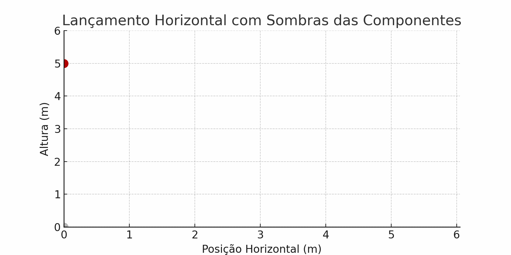

Table of Contents
Mecânica: Visão geral
A mecânica é a área da física que estuda os movimentos de modo geral; desenvolvendo conceitos e estabelecendo princípios que buscam explicar por que e como os movimentos acontecem.
É uma área geral que pode ter várias aplicações e contendo várias subáreas, como: mecânica celeste, mecânica de corpos rígidos, mecânica de fluidos, mecânica de motores etc.
Animação do pêndulo de Newton.

Fonte: DemonDeLuxe (Dominique Toussaint), CC BY-SA 3.0, via Wikimedia Commons
Cinemática
Visão geral
A Cinemática é o estudo do movimento dos corpos sem se preocupar com a análise das suas causas. Nesse tópico iremos introduzir os conceitos básicos relacionados ao movimento como:
| Conceito | Descrição |
|---|---|
| Referencial | Ponto de referência (ponto zero). |
| Posição | posição de cada carro em relação ao referencial. |
| Deslocamento | Variação da posição em um certo intervalo de tempo. |
| Velocidade | Razão entre um deslocamento e intervalo de tempo correspondente. |
| Aceleração | Razão entre variação de velocidade e intervalo de tempo correspondente. |
Velocidade
Considere as imagens abaixo e tente identificar cada um dos conceitos descritos anteriormente.
Descrição do movimento de carros a partir de um referencial, em um certo instante de tempo \(t_0\).

Fonte: imagem criada pelo autor.
Por exemplo, na representção acima, as posições dos três carros são, respectivamente:
\[ -20 \, m \,, \qquad -10 \, m \qquad \text{e} \quad +15\,m\]
Descrição do movimento de carros a partir de um referêncial, em um certo instante posterior (final) \(t_f\).

Fonte: imagem criada pelo autor.
Sobre as duas figuras acima, podemos afirmar, entre outras coisas, que:
A posição do carro vermelho era de \(S_0=-10\,m\) no instante \(t_0\), e foi para \(S_f = -5\,m\) no instante \(t_f\).
Se, por exemplo, \(t_0 = 10\,s\) e \(t_f=12 s\); então, o intervalo de tempo em que ocorre o deslocamento é de \(\Delta t =12-10 =2s\).
A velocidade é a razão entre o deslocamento \(\Delta S = -5 -(-10) = 5\, m)\) e o intervalo de tempo correspondente. Assim,
\[ v = \frac{\Delta S}{\Delta t} = \frac{5\,m}{2\,s} = 2,5\, m/s\]
Aceleração
Quando há uma variação de velocidade (aumento ou redução) existe uma aceleração.
Variação de velocidade entre os instantes \(t_0=5\,s\) e \(t_f = 15\,s\).

Fonte: imagem criada pelo autor.
Considere agora que ocorreu um aumento de velocidade durante um intervalo de \(10 \, s\) (\(\Delta t = 15 - 5 = 10\,s\)). A velocidade foi de \(v_0 = 5\,m/s\) para \(v_f=55\,m/s\).
A aceleração, nesse caso, será:
\[ a = \frac{\Delta v}{\Delta t} = \frac{50m/s}{10s} = \frac{10m/s}{1s}\]
Escrevemos
\[ a = 10\,m/s^2 \]
Queda livre
Aceleração de \(10\,m/s^2\), para baixo. Ou seja, uma acrésimo de \(10m/s\) na velocidade a cada segundo.
Queda livre de um objeto a 5 m .

Fonte: imagem criada pelo autor.
Lançamento horizontal
Qual será a velocidade vertical imediatamente antes de atingir o chão, se a velocidade horizontal for de \(5m/s\)?
Lançamento com velocidade horizontal de 5m/s.

Fonte: imagem criada pelo autor.
Leis de Newton
As de Newton são a base para o estudo da mecânica, ela estabelece os princípios básicos para explicar como e por que os movimentos acontecem.
Antes de iniciar, vamos analisar dois conceitos importantes para entender as leis de Newton: referenciais e forças.
Referenciais
O movimento pode ser diferente para dois observadores diferentes.

Fonte:
Força
Forças de contato e forças de ação à distância
Exemplos de força: tração, magnética, gravitacional.

Fonte: Force.png: Penubagderivative work: Arnaud Ramey, Public domain, via Wikimedia Commons
Forças de atrito

Força de resistência do ar
A força de resistência do ar sustenta um paraquedas, por exemplo.

Fonte: Pearson Scott Foresman, Public domain, via Wikimedia Commons
Força resultante
Força é uma grandeza que tem direção (chamamos de grandezas vetoriais) de modo que, quando duas ou mais forças atuam em um corpo, temos que considerar as direções dessas forças.
Assim, a força resultante é o resultado final da aplicação de todas essas forças.
A força resultante é o resultado líquido de todas as forças atuantes.

Fonte: criado pelo autor.
Primeiria Lei: Inércia
Enunciado da lei
Todo objeto permanece em seu estado de repouso ou de velocidade constante em linha reta, a menos que uma força resultante não nula seja exercida sobre ele.
Movimento em linha reta
Quando a bicicleta freia, a pessoa tende a continuar o movimento em linha reta.


{kind=link}
{kind=link}
{kind=link}
.png){kind=link}
{kind=link}
Inércia
- Inércia é como uma "preguiça" que objetos com massa tem de deixar o seu estado de repouso,ou de movimento uniforme.
- Massa é a quantidade de inércia de um corpo: Quanto maior a massa, mais difícil será para mudar o movimento do corpo.
Efeito da inércia: se a força for suave, a corda de cima se rompe, se a força for abrupta, a corda de baixo se rompe.

Fonte: MikeRun, CC BY-SA 4.0, via Wikimedia Commons
{kind=link}
Referenciais, força centrífuga.
Os Referenciais inerciais - aqueles que respeitam a primeira lei
Ou seja
Em referenciais não inerciais (referenciais acelerados) os corpos são acelerados mesmo na ausência de forças reais.
Como exemplo, do ponto de vista de quem está em movimento circular, existe uma aceleração centrífuga, a qual associamos uma força centrífuga. Mas essa força não existe de fato, ela se deve ao referencial estar acelerado (movimento circular)
Quem está dentro de um automóvel que faz uma curva, sente uma força para fora da curva.

Fonte: Thilp, CC0, via Wikimedia Commons
{kind=link}
Por que Stephen Hawking está flutuando?

Fonte: Jim Campbell/Aero-News Network, CC BY 3.0, via Wikimedia Commons
{kind=link}
Segunda Lei: Princípio fundamental da dinâmica
A aceleração de um objeto é diretamente proporcional à força resultante atuando sobre ele; tem o mesmo sentido que essa força e é inversamente proporcional à massa do objeto.
A aceleração é proporcional à força aplicada, e inversamente proporcional à massa do objeto.

- A aceleração é diretamente proporcional à força aplicada
A aceleração é inversamente propocional à massa
Matematicamente, temos:
\[ a = \frac{F}{m}\]
ou
\[ F = m a\]
Terceira Lei: Ação-reação
Sempre que um objeto exerce uma força sobre outro objeto, este outro objeto exerce uma força igual e oposta sobre o primeiro.
Ou
Para cada força de ação existe sempre uma força de reação, de mesmo módulo e orientação oposta,
Par ação-reação quando uma pessoa empurra outra.

Fonte: MikeRun, CC BY-SA 4.0, via Wikimedia Commons
{kind=link}
Par ação-reação em forças de ação à distância, nesse exemplo, a força gravitacional.

Fonte: Svjo, CC BY-SA 4.0, via Wikimedia Commons
{kind=link}
Força peso
Diagramas de força
Aplicações
Leis de Conservação: Energia, momento linear e momento angular
Principio da conservação da energia
A energia é uma quantidade que se conserva, ou seja, não podemos criar nem destruir energia, apenas transformar de um tipo em outra.
Energia cinética
A energia associada ao movimento de um objeto de massa \(m\) com velocidade \(v\) é calculada pela expressão
\[ E_c = \frac{m v^2\}{2} \]
Energia potencial gravitacional
A energia associada a posição de um objeto, de massa \(m\), em uma altura \(h\), submetido a uma gravidade caracterizada pela aceleração \(g\) (na superfície da terra, usaremos o valor \(g = 10 m/s^2\)
\[E_g = m g h \]
Trabalho de uma força
A energia fornecida ao aplicar uma força \(F\) em um objeto, movendo-o na mesma direção da aplicação da força, por uma distância \(d\) é calculada por
\[W = F d\]
Conservação da energia mecânica
Gravitação
Mecânica dos Fluidos
A mecânica dos fluidos estuda o comportamento de líquidos e gases em repouso ou em movimento.
(Conteúdo a ser adicionado.)